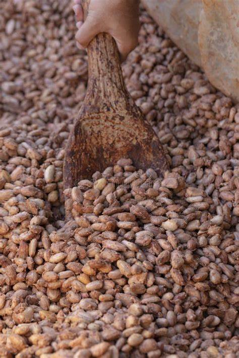

The genus Theobroma (or “food of the gods” in Greek) originated millions of years ago in South America, to the east of the Andes. Theobroma has been divided into twenty-two species of which T. cacao is the most widely known. Recent archaeological evidence found in Southern Ecuador indicate that cocoa beans were already used more than 5,300 years ago by native population and that, 1,500 years before the domestication of the tree. Since then, the seeds of T. cacao had been used by several pre-Colombian civilizations including the Maya (covering among the current Mexico, Guatemala and Honduras), the Incas (covering the current Peru, Ecuador, Colombia and Bolivia) and the Aztecs (covering the current Southern Mexico). Cocoa beans were used by pre-Colombian civilizations as food ingredient (for beverage, mixed with corn flour and spices), but also as a currency for trade or for ritual behaviour.
The first outsider to drink chocolate was Christopher Columbus, who reached Nicaragua in 1502 searching for a sea route to the spices of the East. But it was Hernan Cortés, leader of an expedition in 1519 to the Aztec empire, who returned to Spain in 1528 bearing the Aztec recipe for xocoatl (chocolate drink) with him. The drink was initially received unenthusiastically and it was not until sugar was added that it became a popular drink in the Spanish courts and gradually in other European courts. In order to meet European growing demand, cocoa cultivation was slowly extended during the colonization period to the three main current cocoa producing areas detailed below: Asia, Africa and Latin America and the Caribbean.

Pods containing cocoa beans grow from the trunk and branches of the cocoa tree. Harvesting involves removing ripe pods from the trees and opening them to extract the wet beans. The pods are harvested manually by making a clean cut through the stalk with a well sharpened blade. For pods high on the tree, a pruning hook type of tool can be used, with a handle on the end of a long pole. By pushing or pulling according to the position of the fruit, the upper and lower blades of the tool enable the stalk to be cut cleanly without damaging the branch that bears it. The pods are opened to remove the beans within a week to 10 days after harvesting. In general, the harvested pods are grouped together and split either in or at the edge of the plantation. Sometimes the pods are transported to a fermentary before splitting. If the pods are opened in the planting areas, the discarded husks can be distributed throughout the fields to return nutrients to the soil. The best way of opening the pods is to use a wooden club which, if it strikes the central area of the pod, causes it to split into two halves; it is then easy to remove the wet beans by hand. A cutting tool, such as a machete, is often used to split the pod, though this can damage the beans. Some machinery has been developed for pod opening, but smallholders in general carry out the process manually. After extraction from the pod, the beans undergo a fermentation and drying process before being bagged for delivery.
Fermentation can be carried out in a variety of ways, but all methods depend on removing the beans from the pods and piling them together or in a box to allow micro-organisms to develop and initiate the fermentation of the pulp surrounding the beans. The piles are covered by banana leaves. The fermentation process begins with the growth of micro-organisms. In particular, yeasts grow on the pulp surrounding the beans. Insects, such as the Drosophila melanogaster or vinegar-fly, are probably responsible for the transfer of micro-organisms to the heaps of beans. The yeasts convert the sugars in the pulp surrounding the beans to ethanol. Bacteria then start to oxidise the ethanol to acetic acid and then to carbon dioxide and water, producing more heat and raising the temperature. The pulp starts to break down and drain away during the second day. In anaerobic conditions, the alcohol converts to lactic acid but, as the acetic acid more actively oxidises the alcohol to acetic acid, conditions become more aerobic and halt the activity of lactic acid. The temperature is raised to 40ºC – 45ºC during the first 48 hours of fermentation. In the remaining days, bacterial activity continues under increasing aeration conditions, as the pulp drains away and the temperature is maintained. The process of turning or mixing the beans increases aeration and consequently bacterial activity. The acetic acid and high temperatures kill the cocoa bean by the second day. The death of the bean causes cell walls to break down and previously segregated substances to mix. This allows complex chemical changes to take place in the bean such as enzyme activity, oxidation and the breakdown of proteins into amino acids. These chemical reactions cause the chocolate flavour and colour to develop. The length of fermentation varies depending on the bean type, Forastero beans require about 5 days and Criollo beans 2-3 days.